FAMOUS ANIME CHARACTERS
For Anyone interested in animanga.Anime characters have become a cultural phenomenon, captivating audiences worldwide with their unique personalities, compelling backstories, and inspiring values. From Goku's courage and determination to Naruto's perseverance and strong sense of justice, these characters have transcended borders and languages, inspiring countless fans to emulate their qualities. With their relatable struggles, triumphs, and relationships, anime characters have become an integral part of modern pop culture, influencing music, fashion, and education, and cementing their place as beloved ambassadors of Japanese culture.
 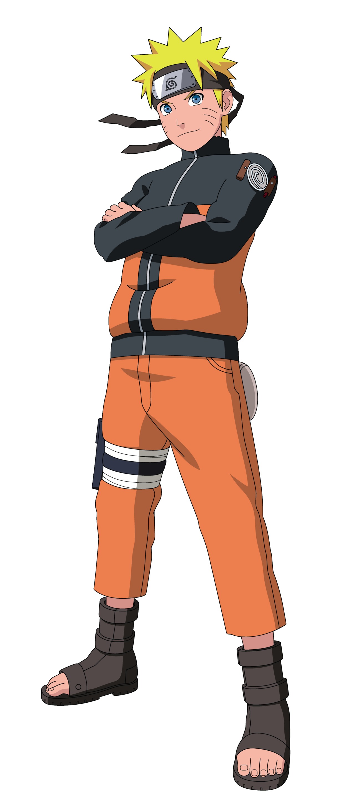
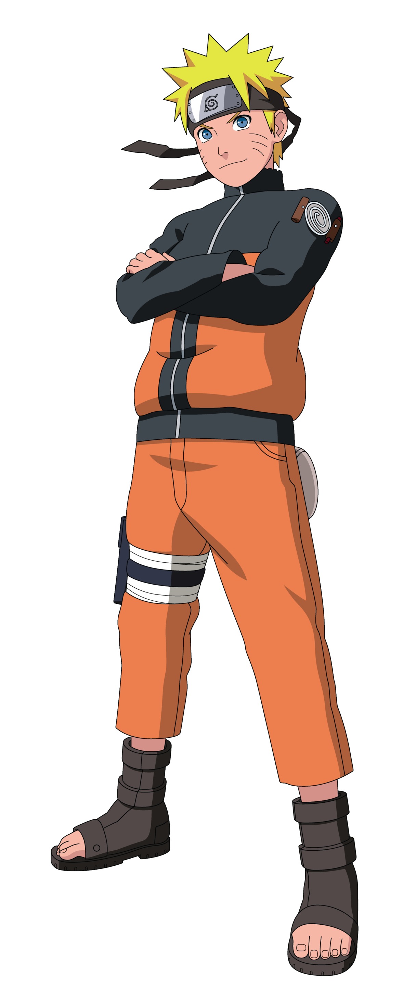
 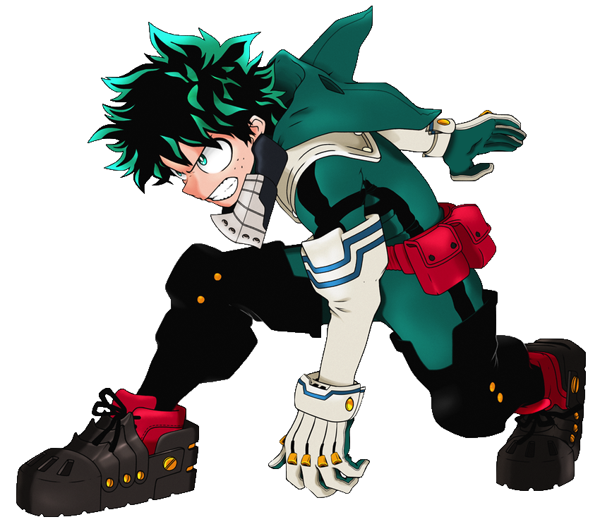
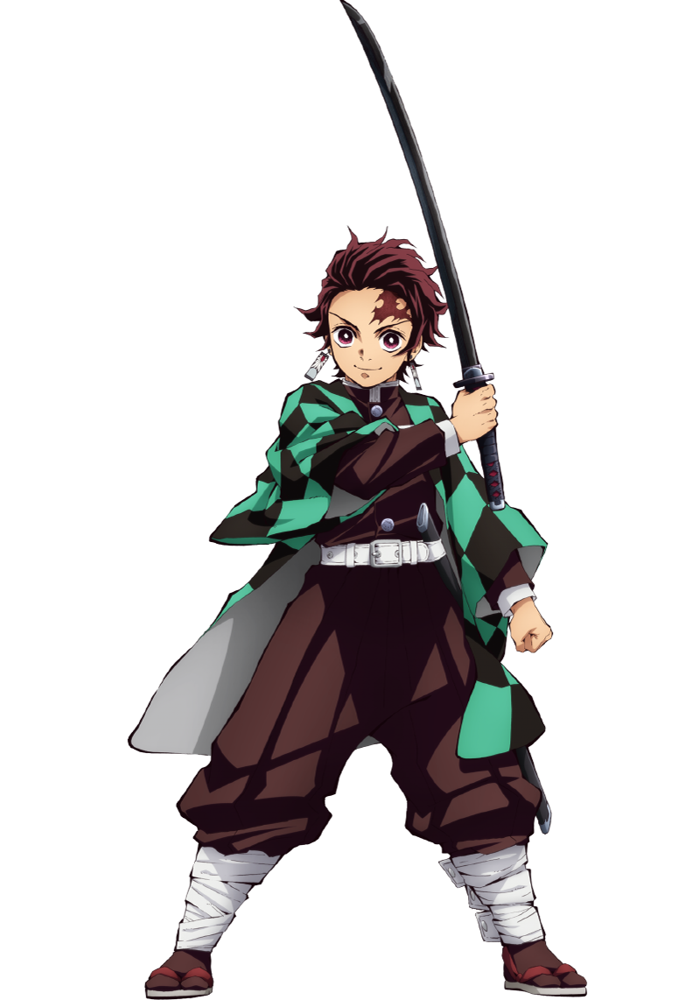
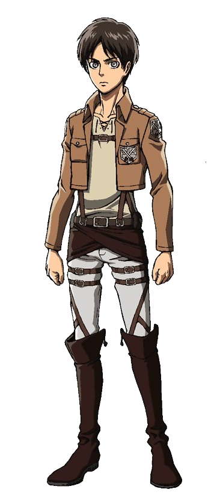
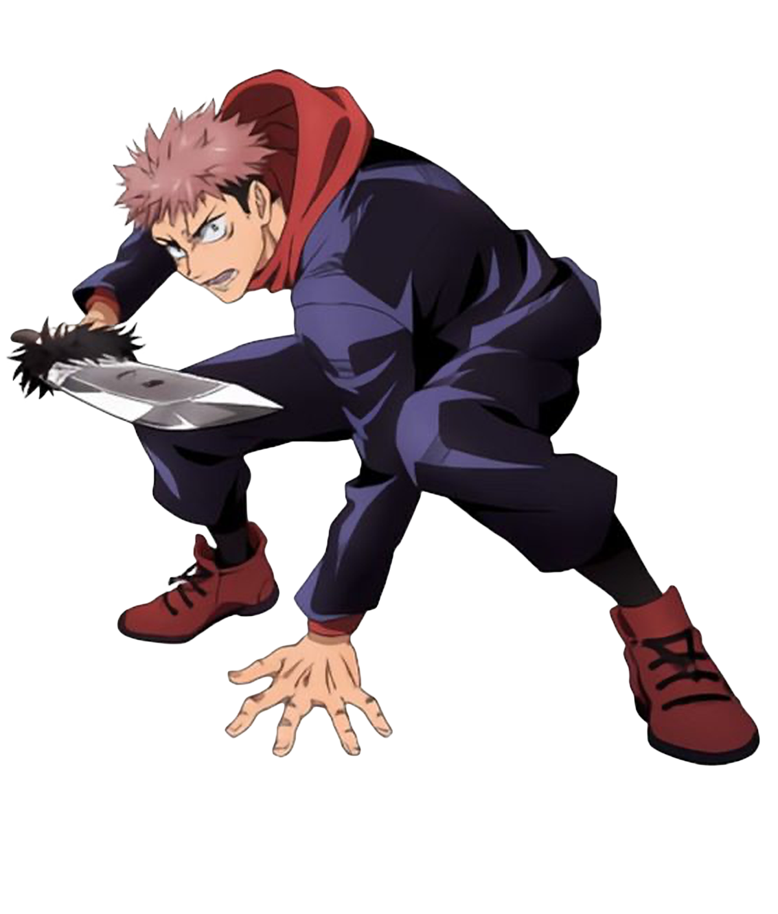
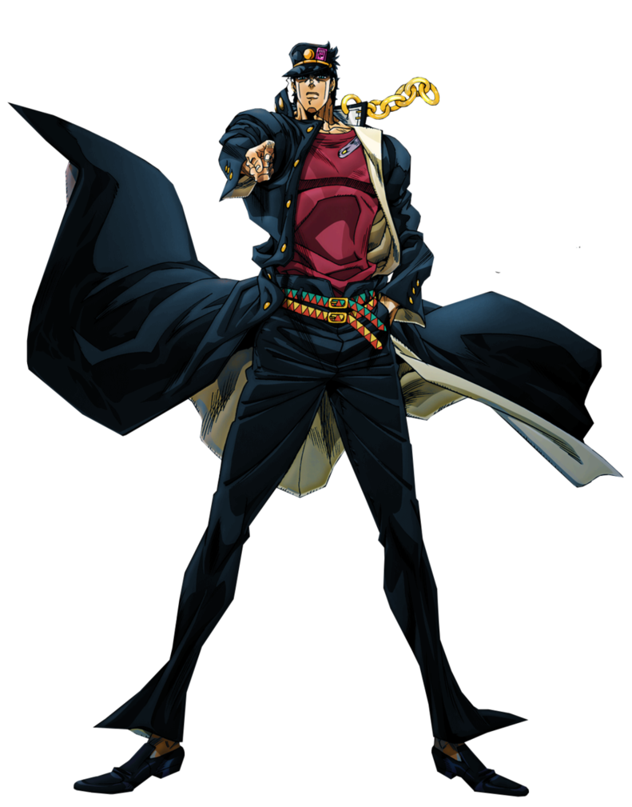
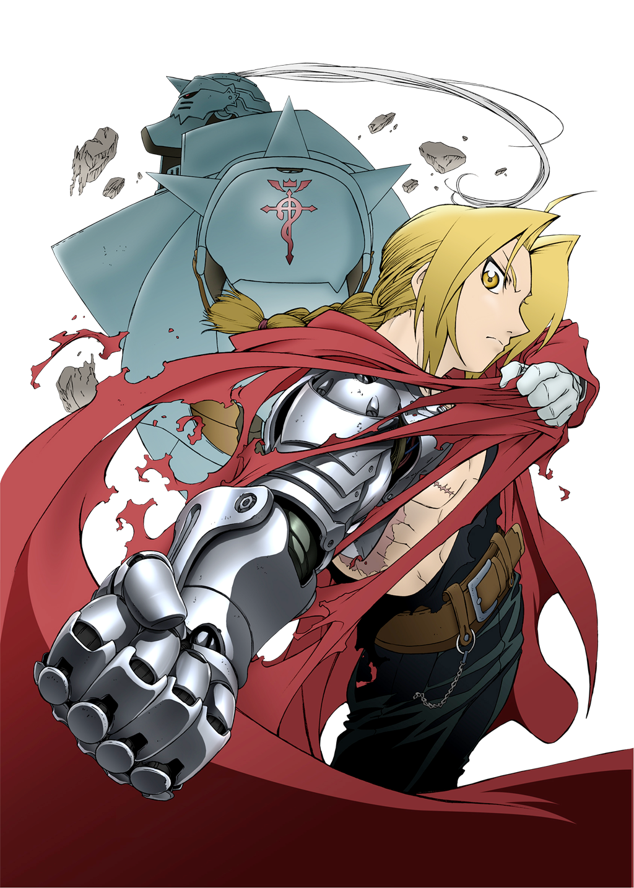
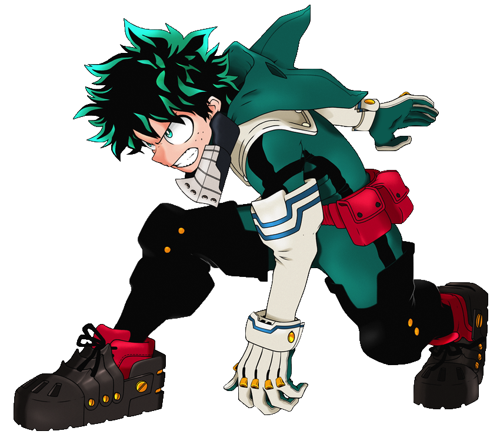
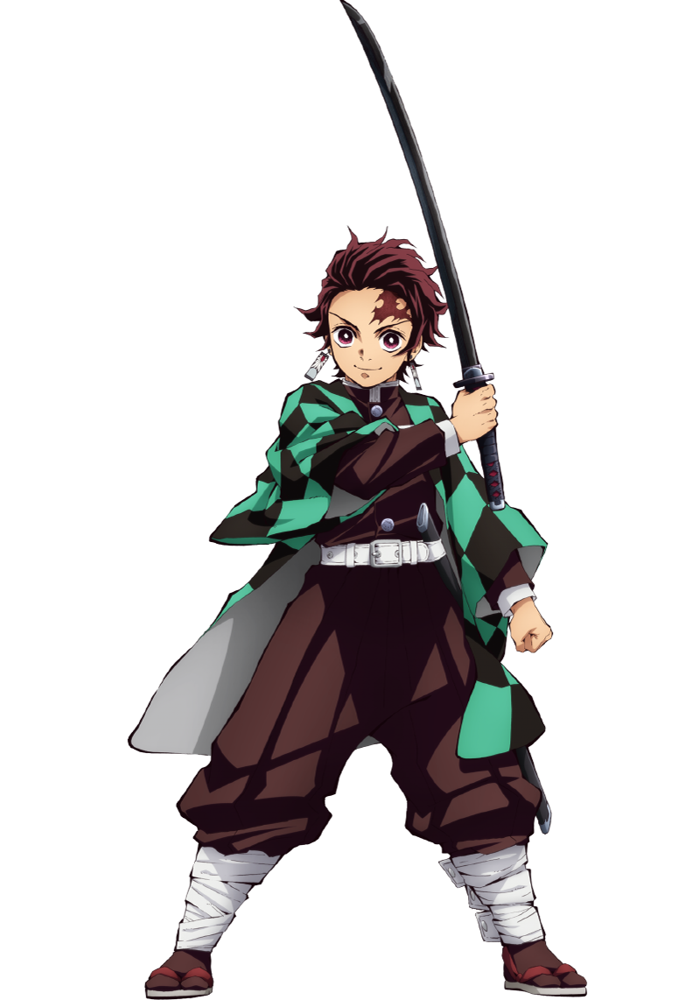
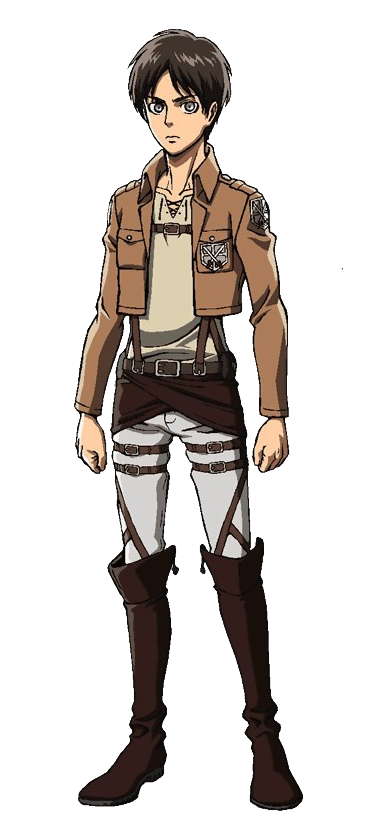
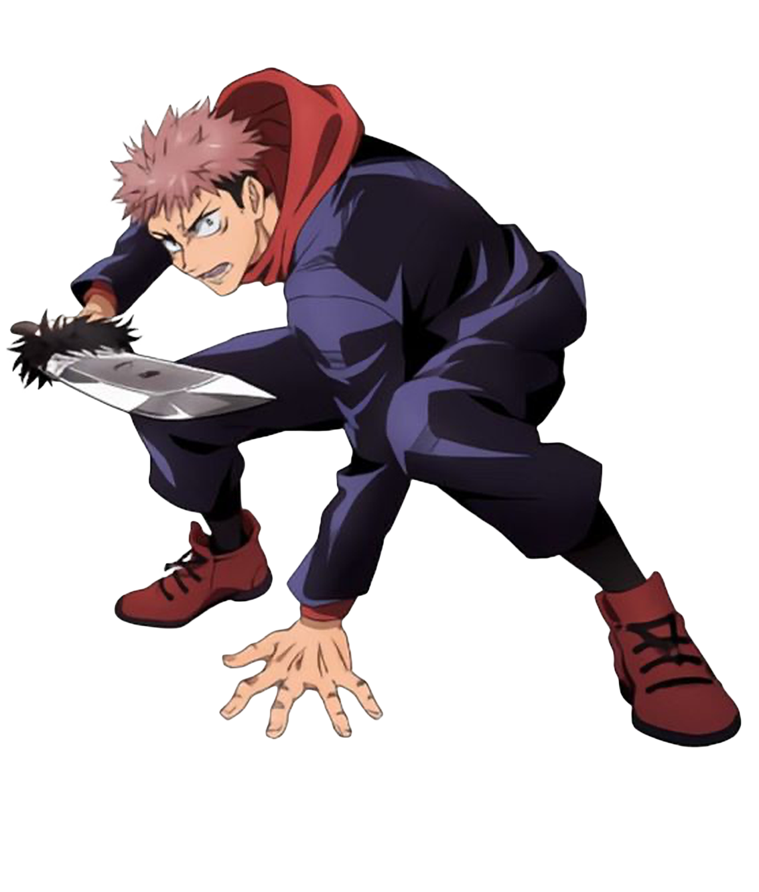
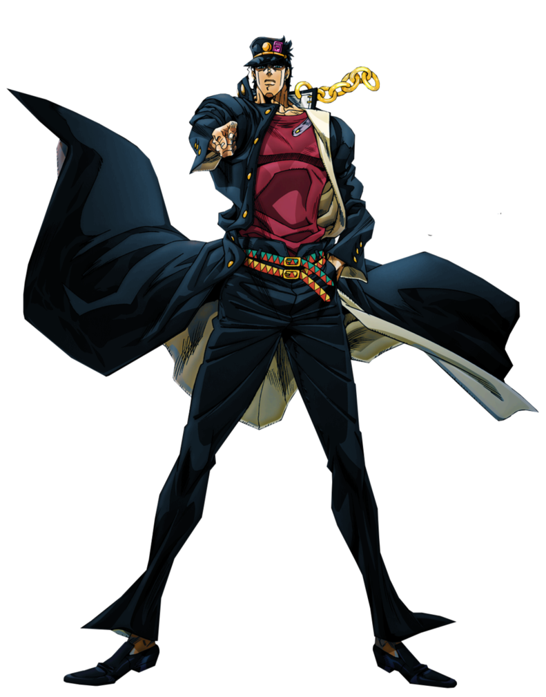
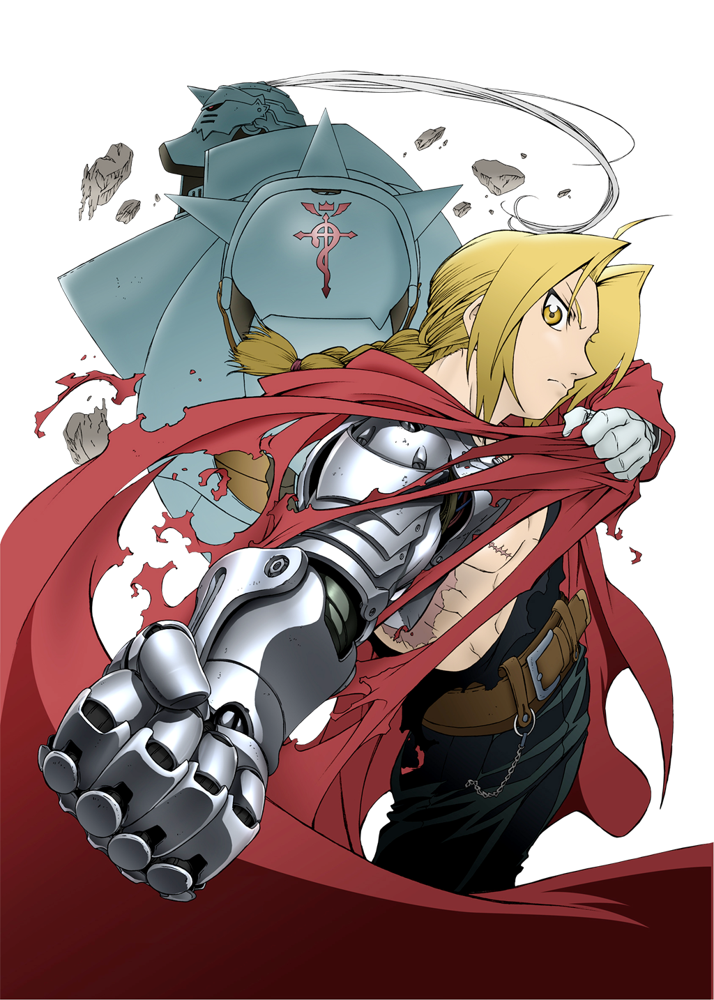